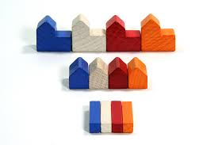
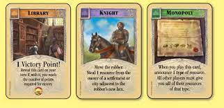
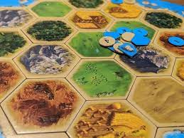
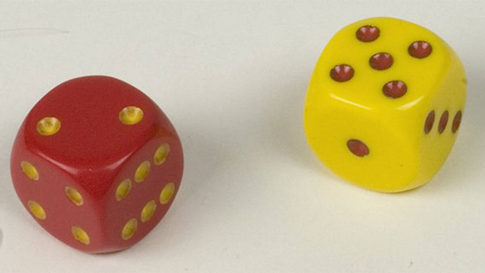
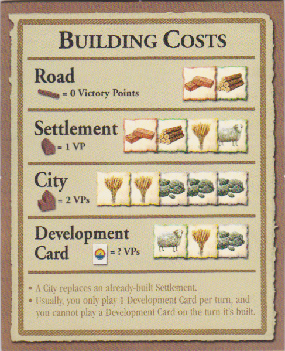
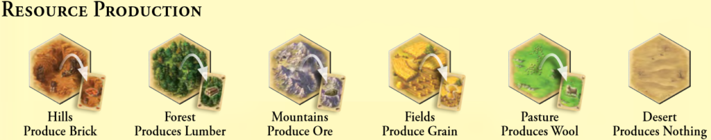
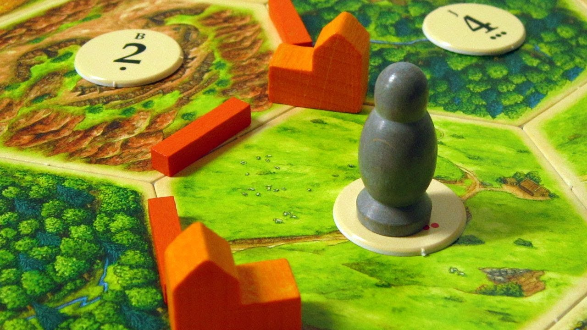
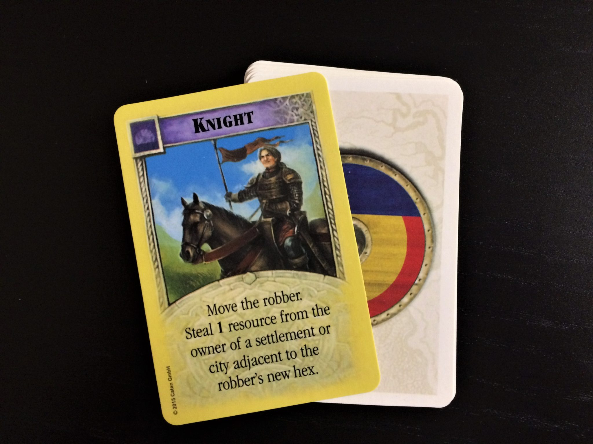

A Simple Guide to Catan
Catan, pronounced kuh-tan, is a popular strategy board game released in 1995 where
players compete to develop a civilization on a fictional island. The game can be played
by three or four players, or up to six people with the expansion pack.
Getting Started
Catan usually takes around an hour to play but may take longer for unexperienced players.
By nature, each successive playthrough of Catan is different from the last. Additionally,
setup is simple and takes under five minutes.

Materials

- 19 Terrain Hexes
- 6 Sea Frame Pieces
- 9 Harbor Pieces
- 18 Circular Number Tokens
- 95 Resource Cards
- 25 Development Cards
- 4 Building Costs Cards
- 2 Special Cards: Longest Road & Largest Army
- 16 Cities
- 20 Settlements
- 60 Road
- 2 Dice
Goal
The goal of Catan is to acquire 10 Victory Points (VPs). These points are awarded
in a number of ways as follows:
- Settlements: For each settlement you have in on the board, you get 1 VP.
You can build five settlements for up to 5 VPs.
- Cities: For each city you have on the board, you get 2 victory points. You can
build four cities for up to 8 VPs.
- Victory Point Cards: You may purchase Development Cards from the shop which
are like a lottery. These cards are random, but in the deck, five of them are Victory Point
Cards. Each Victory Point Card you have in your possession is worth 1 VP at the end
of the game (when you have enough total VPs to win).
- Special Card - Largest Army: This card is obtained by maintaining the longest path
of roads on the board. A path meaning, from point a to point b, without backtracking.
This card can be obtained once your road measures five segments long and is worth 2 VPs.
Keep in mind, there is only one card. If a player builds a longer segment than the previously longest
road, they take possession of the card.
- Special Card - Longest Road: This card is obtained by playing the Knight Card
(another Development Card) the most times. There are fourteen Knight Cards in the
Development Card deck. You must first play two Knight Cards to obtain this card.
If a player plays one more than the previous best, they take possession of the card and its associated VPs.

Setup
Setting up Catan is relatively simple but is crucial to a fun play experience. A key aspect of
Catan is the randomized layouts that make each game unique and engaging. Here are the steps
you need to start a beginners game of Catan
- Connect the 6 sea frame pieces like a puzzle making sure to match the numbers on the interlocking joints.
- Shuffle the 19 terrain hexes and then place them on the board in a clockwise fashion, starting from the coast.
- Flip the 18 circular tokens so that you may see the letter assigned to them.
- Starting on a random hex on the coast, place the tokens in alphabetical order on each terrain hex
similar to how you placed the hexes.
- Flip the circular tokens so that the number faces up on the ceter of each terrain hex.
- More experienced players may opt to alter the board if there is an especially challenging layout.
Otherwise, the setup is complete and the board has been randomized.
First Turn

- Each player will pick a game piece color and roll the included six-sided dice.
- The player with the highest roll begins the first placement round as follows:
- Place a settlement of your color on any valid location of their choosing.
- Place a road branching from your initial settlement in any valid direction.
- Each player will perform steps a and b in a clockwise fashion until
each player has a settlement and road on the board.
- The last player to place a settlement and road will now start the second placement round.
- Each player will perform steps a and b in a counter-clockwise fashion until
each player has a second settlement and road on the board.
- The first turn is now complete and the player with the highest roll is ready to start the game.
When placing your initial settlements there are a number of considerations you will have to make.
This placement will affect the rest of your game so choose wisely.
- Chance: Tokens with more dots below the numbers indicate a higher likelihood of being rolled with 7
being the highest and 2 and 12 being the lowest. Picking hexes that have common numbers (marked by red font)
are more likely to produce resources
- Resourec: Each player starts with the resources of the hexes they settle around. Additionally,
you will likely want to settle on most of the individual resources to improve the chance that you will have them
at your disposal. Strategy here is crucial, however. Many players can opt to settle on a particular few resources
to monopolize and control the trade around those resources.
- Proximity: Your proximity to other players and harbors has a significant effect on the outcome of your round.
Optimally, you will want space to expand your empire. Additionally, locating yourself near or on a port could be of understand
later in the game.
How to Play
On Your Turn
Catan has a very flexible set of rules for each turn. Individual turns can take some time
if trading is invloved so many players opt to limit the length with a timer. On your turn you:
- You must roll the dice before you do anything else. All players will collect the resources
associated with the number rolled. If you role a seven, make sure to take
advantage of the Rule of Seven, described below
- You may build and trade with other players or the bank for as long as you can afford (or until your time runs out).
- After completing a turn, pass the dice clockwise to the next player to indicate your turn is complete.
Building Costs
Road: Roads must be placed on a segment (the line between two hexes) and must connect to
one of your roads, settlements, or cities. Note the Longest Road special card that can
be earned.

Settlement: Settlements may only be placed on a corner of a hex. This will connect the
settlement to two or three adjacent hexes. Settlements must be placed two segments away
from any other settlements (regardless of who owns it) and must be connected to one of your
roads. Settlements produce one resource (per settlement) when an adjacent hexes' number is rolled.
City: A city may be built to replace a currently in-play settlement. When purchase, the settlement is
simply taken off the board and replaced by the city. This will put 2 VPs into play for you.
Additionally, cities produce two resources (per city) when an adjacent hexes' number is rolled.
Development Card: The deck of 25 development cards acts like a lottery.
A player may purchase a Development Card from the shop but may only play
them on their next turn. A player may play multiple development cards on a single turn.
Victory Point cards may only be played if playing them wins you the game. You should keep your Development
cards hidden from your opponents.
Trading
Trades may be made with other players, though they can only be initiated by a player
who just rolled. These trades are made in whatever manner the two players see fit,
meaning there is lots of flexibility with how and what you trade.

By default, you may only trade with the bank in a four-to-one manner (4:1).
This means, you may trade four of the same resources, for any one resource of your choosing.
If you settle on a harbor location (found at the coast), you may observe that trade listed on that harbor.
3:1 ? means players may trade with the bank three of any single resource for one other resource of their choosing.
2:1 (resource) means that the player may trade two of the resource listed for one other resource of their choosing.
The Robber and the Rule of Seven
The robber is initially placed on the desert tile. This is the only tile that does not
yield resources and hence, does not require a circular number card. When a robber is
placed on a hex, that hex can no longer yield resources for as long as it remains there.
The robber is placed in two ways:
-

If a seven is rolled a series of events occur:
- All players who have eight or more cards must give up half of their deck (rounding down).
If you have 11 cards, you may give up only 5, for example.
- The player who rolled the seven may choose to move the robber to a new hex, blocking that resource.
- The player who rolled the seven may choose to rob a player, as long as that player
has a settlement or city that the robber blocks.
-

If a knight card is played:
- The player who played the knight card may move the robber to a new hex.
- The player who played the knight card may choose to rob a player, as long as that
player has a settlement or city that the robber blocks.
FAQ
-
Question: Which Catan expansion should I get?
There are many game sexpansions that can be purchased for Catan.
All of them offer many new features of gameplay which can spice up
the game for experienced players. A good start would be to get the 5-6
player expansion which simply expands the size of the current game.
From there, you are welcome to research the expansions on your own
and decide what you are most excited about.
-
Question: Will I ever understand Catan?
Yes, of course. Catan may seem complicated at first glance but
after a couple of play-throughs it will feel natural and competitive.
-
Question: How can I get better at Catan?
Ultimately Catan is a luck-based game but you may notice that
a certain person in your group is always winning. How are they doing that?
Experience! Playing the game frequently provides insight on the decisions
you make during a game. You may also benefit from watching better players
compete in Catan. One of the most crucial aspects is trading with others!
More Info
Official Catan Website
Catan Almanac
Purchase Catan on Amazon
Catan Fandom